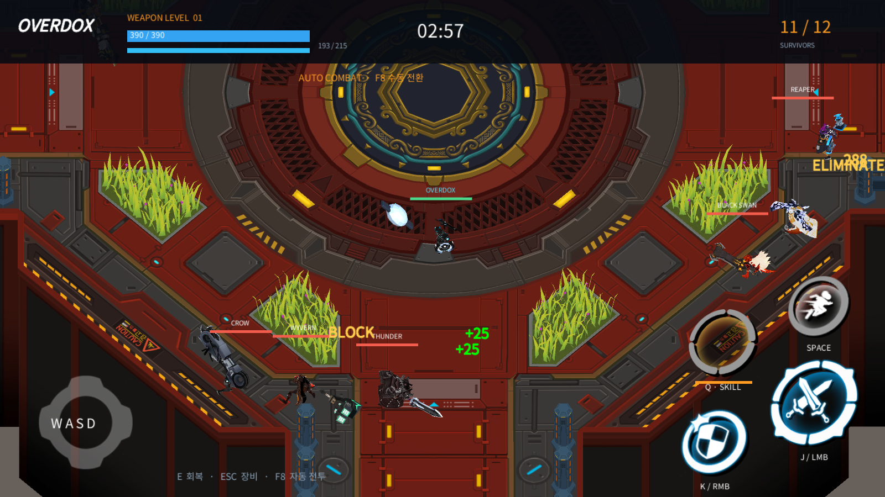

Tracefolio REPORTS & ISSUES
Tracefolio REPORTS & ISSUESOVERDOX 장비119종·DDT·원작 자산 복원 중간 결과
검증 대기Unity 봇 전투와 장비119종·브랜드6종을 연결했습니다. 실제 Blender 원본과29개 테스트 통과를 확인했으며,10시간 검증과 세부 전투 대조는 진행 중입니다.
작업 결과
구현·실행 중간 결과입니다. 전체 복원 완료나10시간 검증 완료 보고가 아닙니다.

Windows 로컬12인 봇 전투, 무기38종·방어구81종과 남녀 외형, 브랜드6종, 원작 맵·텍스처·애니메이션을 프로젝트 소유 실행 코드에 연결했습니다. 원작 서버 로직은 확보되지 않았으며 일부 동작은 원문 설명에 따른 재구현입니다.
변경 내용
적용 내용
공식 장비 설명·실제 영상·공개 배포 패키지를 대조했습니다. 외부 원본은 보존하고, 원작 스크립트를 제거한 시각 자산과 프로젝트 소유 C# 전투 구현을 구분했습니다. 원작 APK는 설치하거나 실행하지 않았습니다.
| 범위 | 현재 결과 |
|---|---|
| DDT | 기존 DesignDataTable 런타임을 가져와 장비와 원작 표를 바이너리로 읽습니다. |
| 장비 | 무기38종, 방어구81종, 방어구 남녀 변형과 개별 슬롯 선택을 연결했습니다. |
| 브랜드 | D-Company, New East, BEAST, Four Stars, OVERDOX, Hazard의 원작 명칭·아이콘·세트 효과를 연결했습니다. |
| 언어 | 한국어·영어 각각4302개 문자열을 복원하여 장비·스킬 이름과 설명을 대조했습니다. |
| Blender | 실제5.2.3 LTS에서 원작 장비119종의 편집 가능한 메시·UV·리그를 저장하고 재열었습니다. 이미지198개를 파일에 포함했습니다. |
| Affinity | 실제3.3.3에서 wordmark.af를 저장했습니다. 초기 임시 브랜드 atlas는 원작 심볼로 대체했으며, 해당 임시 문서의 네이티브 저장은 미완료입니다. |
Assets/Scripts/Management/GearCatalog.cs의 전체 Load 메서드입니다. 기존 임시 수치 목록에서 DDT 바이너리 로딩으로 변경했습니다. TextAsset 연결이 없으면 실패를 숨기지 않고 예외를 냅니다. 이 메서드는 전체 전투 동작의 동일성을 증명하지 않습니다.
private static List<GearRow> Load(TextAsset binary)
{
if (binary == null) { throw new InvalidOperationException("DDT 장비 바이너리가 연결되지 않았습니다."); }
var rows = new List<GearRow>(DataLoader.ReadBinaryDictionary<GearRow>(binary.bytes, BINARY_KEY).Values);
rows.Sort((a, b) => a.id.CompareTo(b.id));
return rows;
}
flowchart TD
A[보존한 원작 장비 표] --> B[프로젝트 장비 JSON과 CSV]
B --> C[DDT 바이너리 생성]
C --> D[GearCatalog Load]
D --> E{TextAsset 연결 여부}
E -->|없음| F[InvalidOperationException]
E -->|있음| G[DDT ReadBinaryDictionary]
G --> H[장비 ID 정렬]
H --> I[슬롯 선택과 전투 Configure]
원작은 Unity2018.4.31f1이며 재현 프로젝트는 Unity6000.0.83f1입니다. 공개 OBB main81의 자산·표와 APK87의 메타데이터를 함께 분석했습니다. 두 버전의 MonoScript 경로 ID가 일치하지 않는 사례가 확인되어 원작 MonoBehaviour 타입 이름에 의존하지 않고 원본 모델·표·실제 화면을 대조했습니다. 원작 실행 코드·계정·네트워크 연결을 재사용하지 않습니다.
출처: 공식 장비 설명, 공식 영상, 실제 플레이 영상, 원작 장비 화면. 원작 자료의 권리는 원권리자에게 있으며 공개 보고서에는 필요한 실행 화면과 프로젝트 자체 구현만 첨부합니다.

검증
EditMode 결과 XML:29개 통과. 원작 성장 수치 Black Swan Lv11 공격력203, Dragon Rogue Lv6 체력420을 공개 장비 화면과 대조했습니다. 이후 수정분은 별도 재검증 대상입니다.
Blender 저장·재열기 결과:오브젝트384개, 메시222개, armature162개, 장비ID119개, FILE 이미지198/198개 packed를 실제 파일 재열기로 확인했습니다. Blender 원본에 모든 전투 애니메이션까지 들어 있다는 의미는 아닙니다.
build11 현재 행동 커버리지:{"weaponsSeen": 38, "armorSeen": 81, "weaponsAttacked": 38, "weaponsSkilled": 38}. 장비 사용·공격·스킬 명령 실행을 기록한 값이며 명중 정확성·원작 동작 일치까지 입증하지 않습니다.
실측 장시간 검증은 초기 빌드04:19:39 KST, 원작 자산 복원 build11은05:58:12 KST에 서로 다른 고정 복사본으로 시작했습니다. build11의10시간 도달 예정은15:58:12 KST입니다. 본 중간 보고 시점에는 완료되지 않았습니다. 최신 소스의 부착 위치·상태 중첩·충전 수 수정은 build11 장시간 결과와 구분하여 빌드·테스트합니다.
남은 사항
- 실측10시간 종료 증거와 오류·메모리·장비별 행동 집계.
- 최신 빌드의 무기 부착 위치·일반 공격 명중·각 고유 스킬 검증 및 실제 수동 입력 확인.
- 전설 검의 투척·순간이동, 변신 장비 외형, 일부 범위·투사체·효과와 서버 전용 계산은 미완료 또는 미확인입니다.
- 방어 피해 감소율·일부 감전 계산·시작 스킬 충전량은 프로토타입 가정입니다. 전체 장비 데이터가 있다고 모든 원작 서버 동작이 동일하다고 보고하지 않습니다.
- Affinity 임시 atlas 저장을 가리는 Windows 보안 대화상자는 허용하지 않았습니다. 편집 가능한 저장본·미저장 상태를 최종 확인해야 합니다.
- 최종 소스·Windows 빌드·원본 경로, 출처·누락 목록, 전후 비교와 공개 첨부 접근 검증.
교훈 검토: 원작 최적화 리그·클립 재바인딩·APK/OBB 버전 차이는 프로젝트 전용 지침으로 정리할 대상입니다. 기존 SampleProjectForUnity의 Camera.Render 캡처 패턴을 사용했으며 검증 전 범용 샘플 변경은 하지 않았습니다. 전역 규칙 변경 없음.
작업 시간
- 제안 시간: 최초 플레이 가능 구현90~150분 예상. 구현 후 별도 실측10시간 검증 요청. 원작 복원 build11 기준 검증 종료 예정2026-11-13 15:58:12 KST.
- 실제로 완료된 시간: 작업 시작2026-11-13 03:50:50 KST. 본 문서는13:40 KST 무렵 작성한 중간 보고로 전체 완료 시각은 미정입니다. 경과 시간에는 자동 실행·관찰 대기가 포함되며 연속 수작업 시간으로 보고하지 않습니다.
- XERJ: 미사용 — XERJ 연결 확인·검색 모두 하지 않았습니다. 공식 웹 자료·실제 영상·공개 패키지 정적 자료·로컬 실행 로그를 사용했습니다.